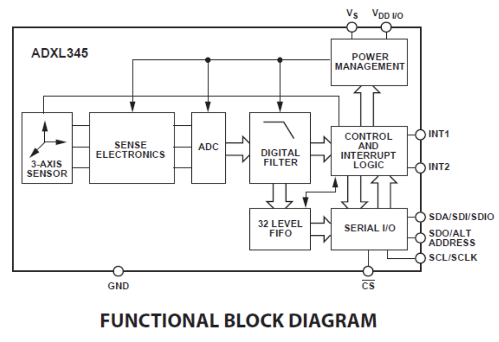
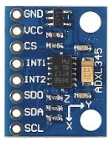
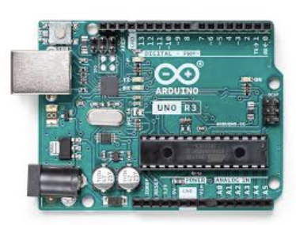
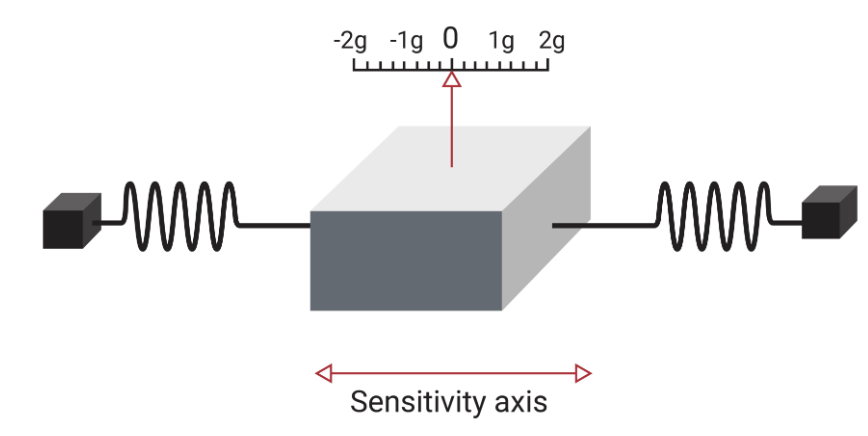
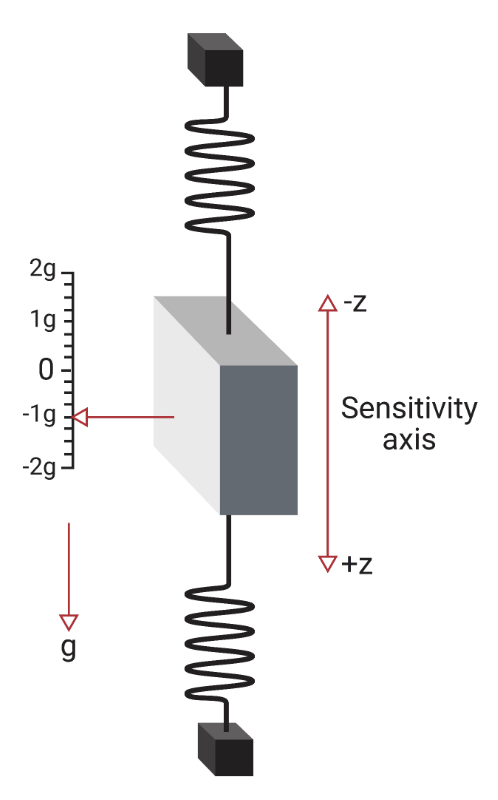

Deliverable 4: Everyday Tech Project Webpage
Construction: Wearable Health Technology
Demo in Github repo ->For our project, we looked at the accelerometer sensor, as used in much wearable health technology, such as in the Oura Ring. Along with getting into some of the granular details of how wearable health technology works, we also viewed this tech through the philosophical lens of Epistemology, more specifically, Reliabilism and what it means to rely on vs. trust an agent. We consulted several resources to build the foundations for our project; one of the most helpful was the Makerspace, where we got help constructing our demo of an accelerometer. We were both interested in looking at wearable health technology as it has become more prevalent in everyday life, and it worked out well that the Makerspace had the resources for us to actually look at the fine details of how accelerometers work.
As for the actual technical concepts behind what we looked at regarding the Oura Ring, the accelerometer is a type of motion sensor that is used by the ring (and many other types of wearable health technology). Accelerometers capture acceleration along the three axes in 3D space (X, Y, and Z axes) which allows them to help measure things like step counts, free fall, and workout tracking. For our specific demo that involved building a working circuit using an accelerometer, we used an Arduino Uno microcontroller board and an ADXL345 accelerometer, and utilized I^2C communication between these two. We followed a tutorial on building the circuit and adapting the code from Circuit Digest (Jain 2020). From there, we were able to construct our prototype, which showed how the real time motion sensing works along all three axes. Take a look at this in the video below! The blue line represents the acceleration along the X axis, the red represents the acceleration along the Y axis, and the green line represents the acceleration along the Z axis.





Works Cited
- ADXL345 Product Information https://www.analog.com/en/products/adxl345.html
- Jain, R. (2020). Interfacing ADXL345 Accelerometer with Arduino UNO. CircuitDigest. https://circuitdigest.com/microcontroller-projects/interface-adxl345-accelerometer-with-arduino-uno
- Learn about MEMS accelerometers, gyroscopes, and magnetometers · VectorNav. (n.d). https://www.vectornav.com/resources/inertial-navigation-primer/theory-of-operation/theory-mems
Deconstruction: Everyday Tech x Epistemology
When thinking about how to approach framing the Oura ring/wearable health technology philosophically, Jessie's consultation was really helpful. She had us look into the ideas of reliability vs. trustworthiness, which have important applications when looking at a lot of technology, but specifically with things like AI and other anthropoglossic forms of technology. Our discussions around Social Epistemology really helped me start thinking about how we know knowledge (aka, justified true beliefs), which is what led me to Reliabilism. It was especially helpful to briefly cover Positivism and Interpretivism in class, as they led me to know that there were multiple frameworks for approaching research and the process of justifying beliefs and establishing truth. Our class discussions for the Epistemology week really dug into the question of how we can know something, which was a helpful guide as I considered how to present a new framework in the context of wearable health technology.
The following are the discussion questions that we prepared for class:
- How does Oura employ reliability to sell its products? Trustworthiness?
- Can you have trustworthiness without reliability? Can you trust something without relying on it?
- How might an entity’s degree of anthropoglossicness relate to its perceived reliability? To its perceived trustworthiness?
- What is the relationship between trust and responsibility? Between reliability and responsibility?
- If there existed a completely reliable sensor that could accurately report your emotions 24/7, would you want to use it?
I also really enjoyed the riveting conversations that came out of my peers' presentations. Throughout the course, our class has been really willing to participate eagerly in discussion, and this really made the course interesting and engaging. Out of the final projects, I enjoyed diving into Ethics through the lens of Smart devices, thanks to Klaus and Joe's presentation. It was fascinating to consider the Original Position question -- I had vaguely heard of this philosophical concept before, but I didn't know the details. I think it fit well with their presentation and prompted a lot of interesting conversation, and I think it could have applied more broadly to a lot of other presentations as well. I appreciated that Henry brought up how tech companies seem to be marketing all of their products as necessities; this is actually what helped me think about some of my own supplemental discussion questions for my own presentation.